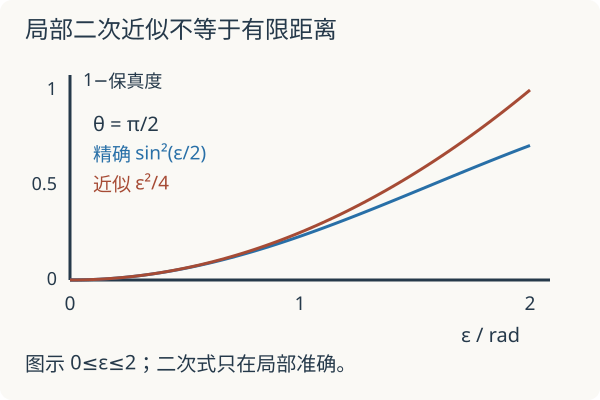

研究课程 09 · 量子几何张量：曲率之外，量子态还有距离
先修：Berry 联络的完整两能级计算、能带。目标：从相邻态的重叠推出量子度量，并区分可复算的两带机制、材料中的测量重建与仍需研究的多体响应。资料核查到 2026-09-08。
1. 相同能量、相同曲率，态还可能改变吗
考虑只依赖实参数 \(t\) 的两能级 Hamiltonian
能量始终是 \(\pm E\)，下态可取实向量 \(u(t)=(-\sin(t/2),\cos(t/2))^T\)，局部联络 \(A_t=0\)。一维参数也没有非零的二形式曲率。然而
并非恒为一。态沿实方向转动，距离改变但不需要曲率。这解释了为何仅看 Chern 数或 Berry 曲率并不能描述全部量子几何。这里的 \(t\) 是局部参数；若把它变成完整周期回路，端点相位与整体 Berry 相位仍需单独检查。
2. 去掉纯相位方向，留下物理变化
设 \(u(\lambda)\) 是归一化的非简并本征态，\(P=|u\rangle\langle u|\)。微小变化 \(du=\partial_i u\,d\lambda^i\) 中，沿 \(u\) 的分量可由局部相位产生，因此定义投影后的变化 \(D_i u=(1-P)\partial_i u\)。
量子几何张量为
相位变换 \(u'=e^{i\chi}u\) 中多出的 \(i(\partial_i\chi)u\) 被 \(1-P\) 消去，所以 \(D_i u'=e^{i\chi}D_i u\)，\(Q\) 不变。任意复向量 \(v\) 满足 \(v^\dagger Qv=\|\sum_jv_jD_ju\|^2\ge0\)，所以 \(Q\) 是半正定 Hermitian 矩阵。
把相邻态展开到二阶，并用归一化的一阶与二阶导数关系消去沿态方向的项，得到
也可直接看 \(\|(1-P)u(\lambda+d\lambda)\|^2\)：这精确等于左边，其最低阶正是 \(\|D_i u\,d\lambda^i\|^2\)。因为 \(d\lambda^i d\lambda^j\) 对称，虚部不贡献距离。这里的距离指射线间的局部距离，纯粹换相位应当距离为零。
联络采用 \(A_i=i\langle u|\partial_i u\rangle\)，所以
不能把“虚部是曲率”直接当作没有系数与符号的计算公式。
3. 继续使用上一讲的同一个下能级
对 \(u=(-e^{-i\phi}s,c)^T\)，上一讲给出了两个偏导与 \(\langle u|\partial_\phi u\rangle=-is^2\)。代入定义：
于是
这是半径 \(1/2\) 的球面度量表达。在极点，\(g_{\phi\phi}=0\) 是经度坐标退化，不是两个正交方向上的所有态变化都消失。实验用非极点参数。
两参数下 \(\det Q\ge0\) 进一步给出
本两能级纯态中取等号，因为与 \(u\) 正交的复空间只有一维，\(Q\) 的秩至多一。多能级中一般只能说不等式，不能把两带等号当作所有量子材料的恒等式。任意正交坐标下，\(\operatorname{tr}g\ge2\sqrt{\det g}\ge|F_{12}|\)；比较这些量前也要统一坐标与单位。

固定 \(\theta\)，把 \(\phi\) 增加 \(\epsilon\)，精确重叠给出
二阶近似是 \(g_{\phi\phi}\epsilon^2\)。此特定路径的误差从四阶开始；不是任意坐标路径都没有三阶项。
先预测：把步长加倍，精确距离损失一定恰好变为四倍吗？默认 \(\theta=\pi/2,\epsilon=0.4\)，精确损失 \(\sin^2(0.2)\approx0.0394695\)，局部度量近似 \(0.04\)。曲率为 \(0.5\)，\(\det g=(F/2)^2=0.0625\)。
4. 从本征态几何到可以测量的量
对非简并能级 \(n\)，微分 \(H|u_n\rangle=E_n|u_n\rangle\)，投影到 \(m\ne n\) 得到
插入完备关系后：
这个公式把态的导数联系到带间矩阵元与能隙。若参数是晶体动量，\(g_{k_i k_j}\) 有长度平方的单位，且 \(\partial_{k_i}H\) 与速度算子有关；实验不能把无量纲球面实验的数直接当作材料的度量。能隙接近零时既要注意分母，也要重新检查孤立带假设。
Kang 等的工作在 2024 年 11 月在线发表、编入 2025 年《Nature Physics》，使用偏振、自旋与角分辨光电子谱框架，在 CoSn 中重建量子几何信息。这是结合谱学与模型的重建，并非任意材料上无假设地直接读取全部 \(Q\)。原始研究
2025 年 Kim 等进一步报告固体量子度量张量的直接测量；其原始数据与模型数据公开在 Dryad 数据集。读这类工作应逐项核对：观测的是谱强度还是跃迁率、怎样反演态的纹理、使用几带近似、误差如何传到态的导数，以及哪些分量真正受数据约束。
2026 年研究阅读窗口。 关于平带量子几何如何影响磁交换，已有研究预印本分别考察几何控制的长波响应，以及填满隔离平带中带间虚跃迁、能隙和投影算子解析结构对交换长度的作用。不能把这些不同假设合并成“度量越大，交换范围一定越长”。可对照 2026-08 的 Quantum geometry and RKKY in flat bands 与 2026-07 的 Quantum Geometry-Driven RKKY，先列出填充、能隙、有限尺寸与响应量，再比较结论。这里按所核查的预印本内容介绍，未将其作为本课已证明定理。
5. 迁移题与研究边界
题一。 第一节实态路径的曲率为零，度量是否为零？直接从精确保真度检验。
查看计算
\(1-\cos^2(\epsilon/2)=\epsilon^2/4+O(\epsilon^4)\)，所以 \(g_{tt}=1/4\)。局部没有曲率不代表没有距离；一维路径也不能定义一个二维 Chern 积分。
题二。 测得某体系量子度量较大，是否已经证明它有更高的超导临界温度或更长的 RKKY 交换距离？
查看缺少的推理
没有。单粒子几何本身不指定占据、相互作用、带间能隙、散射与多体态。超流权重与临界温度也不是同一个量。必须给出相应响应理论及其适用条件，再处理实验混杂项。上面的两态保真度实验只检验局部几何关系，不能代替这些材料结论。
速查与继续阅读
\(Q_{ij}=\langle\partial_i u|(1-P)|\partial_j u\rangle=g_{ij}-iF_{ij}/2\)。实部控制相邻射线的局部距离，曲率记录反对称几何；二者都不能由能谱单独决定。接回强关联与量子输运时，需要额外建立多体响应；接回拓扑能带时，先把取向与符号统一。本讲没有复现材料实验，也未声称覆盖整个量子几何研究领域。
继续推导：弱驱动与谱学测量把带间矩阵元接到有限时间跃迁、黄金律与加权谱积分。